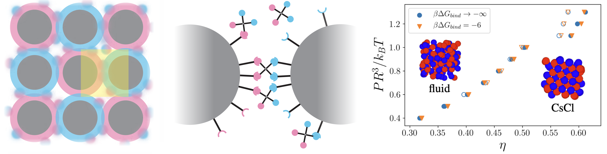
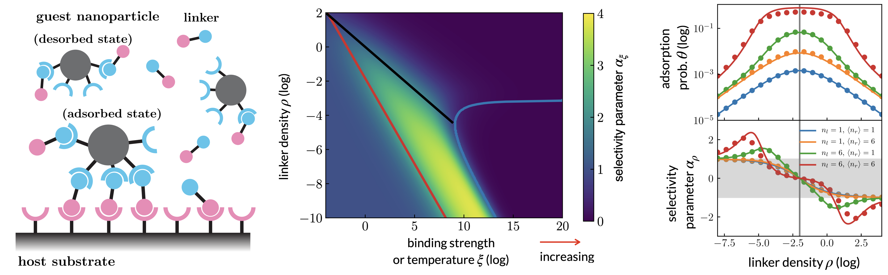
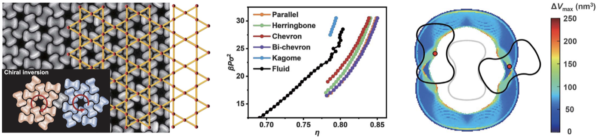
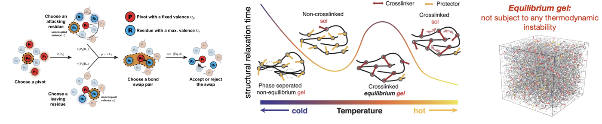

研究方向
我们用统计物理与计算建模研究软物质与无序体系的物理机制， 对象涵盖高分子网络、胶体组装以及多价生物分子相互作用。
DNA 编程的自组装
可编程自组装能将简单组分构筑为复杂材料，但传统 DNA 设计常因结构复杂与动力学脆弱而受限。 我们展示了连接子介导策略如何简化相互作用、扩大可操作的组装窗口，并揭示植根于多价结合的 组织机制，为实验与理论中可靠构筑复杂结构提供了一套简洁而通用的框架。
- X. Xia, Y. Peng, K. K. Li, R. Ni, Reports on Progress in Physics 88, 078101 (2025)
- X. Xia, H. Hu, M. P. Ciamarra, R. Ni, Science Advances 6, eaaz6921 (2020)
超选择性与多价作用
多价弱作用为何能实现“超选择性”识别？我们从统计力学刻画多体结合的协同效应， 量化配体密度、受体分布与结合亲和力对识别阈值与灵敏度的影响， 并探索其在靶向检测与分子识别中的可用性。
- X. Xia, R. Ni, Phys. Rev. Lett. 132, 118202 (2024)
- X. Xia, G. Zhang, Y. Jiao, R. Ni, JACS Au 3, 1385 (2023)
复杂胶体自组装
复杂胶体体系能形成多样结构，但几何挫折与动力学瓶颈常阻碍可控组装。 我们探究粒子形状、曲率与多价熵驱动作用如何协同打开稳健的有序路径， 使开放或分层架构得以大尺度形成，并为设计具光学、力学、拓扑功能的材料奠定基础。
- S. Wan, X. Xia, Y. Gao, H. Zhang, Z. Zhang, F. Wu, X. Wu, D. Yang, T. Li, J. Li, R. Ni, A. Dong et al., Science 387, 978 (2025)
- T. Li, X. Xia, R. Ni, A. Dong et al., Sci. Adv. 8, eabq0969 (2022)
可逆键交换网络材料
Vitrimer 是具备动态可交换键的可重构高分子网络。我们关注键交换动力学与网络结构 如何共同决定其流变与松弛行为，并探索这些可调控因素在自适应与可回收软材料设计中的作用。
- P. Rao, X. Xia, R. Ni, J. Chem. Phys. 160, 061102 (2024)
- X. Xia, P. Rao, R. Ni, JACS Au 2, 2359 (2022)
- Q. Lei, X. Xia, R. Ni et al., PNAS 117, 27111 (2020)